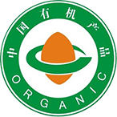
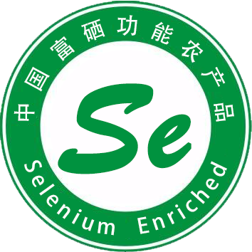

这里所说的“有机”不是化学上的概念，而是指采取一种有机的耕作和加工方式。有机产品是指按照这种方式生产和加工的；产品符合国际或国家有机产品要求和标准；并通过国家认证机构认证的一切农副产品及其加工品，包括粮食、蔬菜、水果、奶制品、禽畜产品、蜂蜜、水产品、调料等。

硒能提高人体免疫，促进淋巴细胞的增殖及抗体和免疫球蛋白的合成。硒对结肠癌、皮肤癌、肝癌、乳腺癌等多种癌症具有明显的抑制和防护的作用，其在机体内的中间代谢产物甲基烯醇具有较强的抗癌活性。硒与维生素E、大蒜素、亚油酸、锗、锌等营养素具有协同抗氧化的功效，增加抗氧化活性。同时，硒具有减轻和缓解重金属毒性的作用。

良好农业规范作为一种适用方法和体系，通过经济的、环境的和社会的可持续发展措施，来保障食品安全和食品质量。GAP主要针对未加工和最简单加工（生的）出售给消费者和加工企业的大多数果蔬的种植、采收、清洗、摆放、包装和运输过程中常见的微生物的危害控制，其关注的是新鲜果蔬的生产和包装，但不限于农场，包含量从农场到餐桌的整个食品链的所有步骤。

无公害农产品是指产地环境符合无公害农产品的生态环境质量，生产过程必须符合规定的农产品质量标准和规范，有毒有害物质残留量控制在安全质量允许范围内，安全质量指标符合《无公害农产品(食品)标准》的农、牧、渔产品(食用类，不包括深加工的食品)经专门机构认定，许可使用无公害农产品标识的产品。